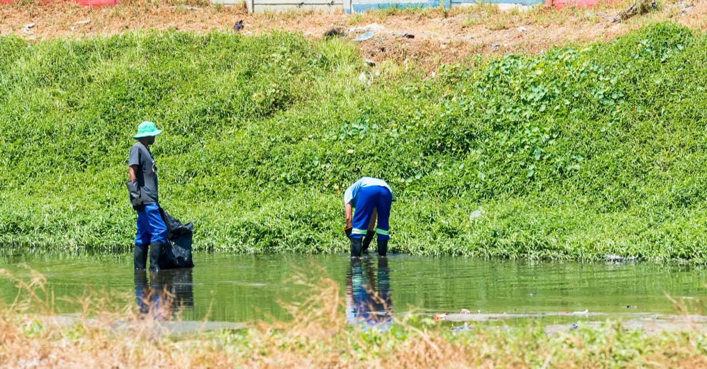
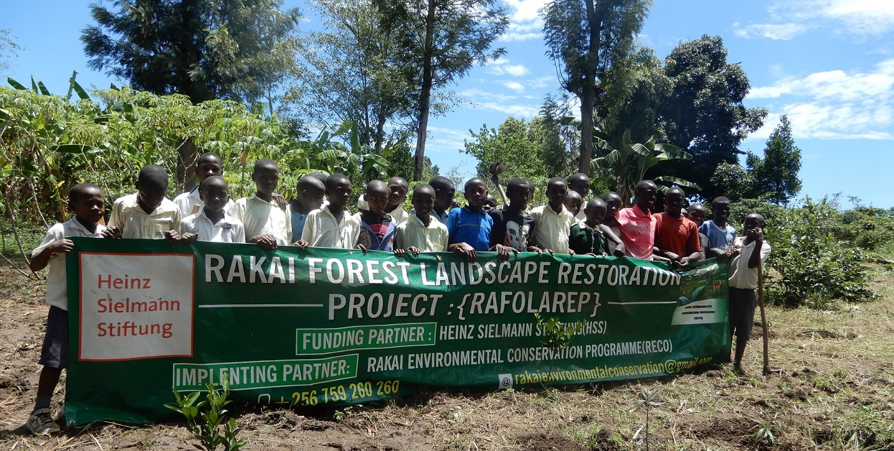
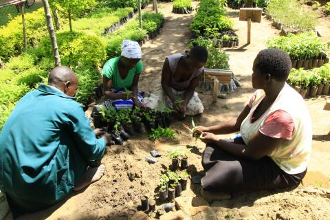

"PROTECTING OUR ENVIRONMENT IS OUR PRIORITY"
| ENVRONMENTAL CONSERVATION "PROTECTING OUR ENVIRONMENT IS OUR PRIORITY" |
| HOME | ABOUT US | PROJECTS | CONTACT US | APPLY |
| PROJECTS |
|
Introduction to projects Our mandate as concerned citizens should span the entire country, which despite its abundant and quality natural resources, has a high proportion of food insecure people living below the poverty line and contributing significantly to environmental degradation. There are however, considerable opportunities and possibilities for economic growth and the attainment of national and global sustainable development goals, particularly to those relating to poverty, hunger and environmental sustainability. |
|  |  |
| AFFORESTATION | CLEANIING WATERBODIES | SENSITIZATIONS |
|  |
 |
 |
| GROWING OF TREES | SAFE SOURCES OF ENERGY | ACT AS AN EXAMPLE TO OTHERS |
| Conservation programmes over the outgoing strategic period has been aligned to the global and national sustainable development, biodiversity conservation and climate change agendas. Conservation programs seek to contribute to the proposed targets and outcomes where it matters most – and influence, in whatever small way, the overall implementation for the benefit poor rural communities. |
| MUWANGUZI GIDEON PAUL U0193/008 |